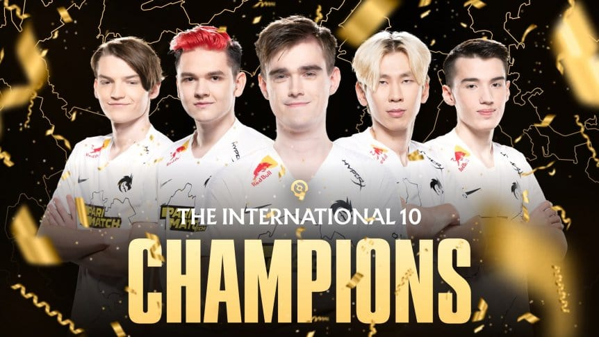

Dota 2 The International 2024: Team Spirit vuelve a dominar
El equipo ruso Team Spirit se coronó campeón del The International 2024 de Dota 2 tras una serie final impresionante contra Gaimin Gladiators. Su coordinación, estrategias y lectura de juego los consolidan nuevamente como uno de los equipos más fuertes en la historia del competitivo de Dota 2.
Durante todo el torneo, Team Spirit mostró un dominio absoluto en la selección de héroes, ejecución de combos y control de objetivos, dejando claro que su experiencia y preparación marcaron la diferencia. Cada partida fue un ejemplo de estrategia y trabajo en equipo de alto nivel.
Gaimin Gladiators ofreció resistencia y momentos espectaculares, pero Team Spirit supo adaptarse a cada situación, mostrando su versatilidad y control total del juego. La final fue intensa, con emocionantes enfrentamientos que mantuvieron a los fans al borde del asiento hasta el último minuto.
Con esta victoria, Team Spirit reafirma su legado como una de las organizaciones más respetadas en Dota 2, y los fanáticos esperan con ansias el próximo TI para ver si podrán mantener su dominio.
⬅ Volver a eSports